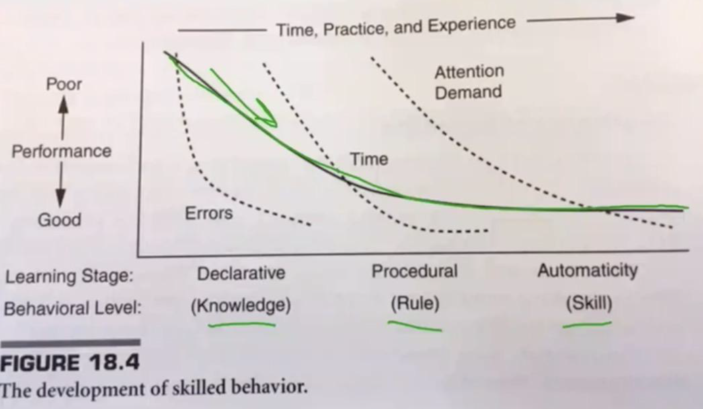

Over my 4-1/2 years as a full-time student at USC, I had the amazing opportunity to take a variety of classes — both engineering and non-technical courses — throughout USC, and today I'd like to write a short article summarizing which I think were the most useful and also point out some which were (from my view) not the best use of time depending on what you want to accomplish.
Just note that which courses are useful to you specifically might vary depending both on where you're starting at and what goals you have as well.
With that, I'll sort of point out what I think each course is useful for, and if it's a class that I recommend AND it's an area that you want to improve in as well, it might be a good class to take.
On the other hand, if you already have a strong aptitude in that area, or if it's an area that you're not looking to improve in, then the course might not be the best use of your time.
College Courses (And Experiences In General) Are Like Venture Capital
I was 16 years old when I first walked onto a college campus for a full-time college courseload as a dual-enrollment high school student taking all of my classes at the University of Minnesota in Fall 2016, and I turned 26 years old only a week and a half before my last college course in December 2025 before I decided to finish the PhD part-time.
As such, I have nearly 10 years of college courses under my belt, having had a ~50-75% full ride for undergrad which allowed me to graduate debt-free, and a Full Ride for my MS and PhD in Engineering at USC which allowed me to take all of the Master's coursework for free, explore more technical electives that I was interested in beyond the core course requirements, and, on occasion, explore courses in many other schools at USC which I thought aligned with my goals as well.
My main conclusion is: most college courses are not worth it in the long-term.
But the courses that paid off ended up paying off disproportionately compared to the ones that didn't.
For example, as I'll mention below, one of my biggest goals ALL THROUGHOUT grad school was to improve my communication and social skills — many of the classes sucked at addressing that, but a couple had a disproportionate impact at helping me improve.
When it came to improving my communication skills and charisma, I got immense value from my standup and sketch comedy classes, for example, but I got almost zero benefit from taking classes which were more directly geared towards public speaking.
There was also a comedy class I took outside of the THTR department which had much less of an impact on me compared to the comedy classes in the THTR department, which were highly useful for my own personal development.
Similarly, I took A TON of technical electives in Viterbi beyond my master's degree — some of which were well worth it, but many of which ended up similarly being a waste of time.
But again, just like with comedy, the classes that were worth it had a disproportionate impact on my career while I ended up largely forgetting about the rest which didn't have as much of an impact.
The "venture capital" principle applies to experiences outside of the classroom as well.
You might try a bunch of different research labs or student groups, and most might not be that fruitful, but it only takes one good experience to completely change the trajectory of your career.
For me in undergrad, that experience was getting involved with the NASA Space Grant High Altitude Ballooning Research Lab — an experience which directly led to me getting two full rides at my dream grad school: USC.
Alongside that, I'd also thought about joining other groups on campus such as the Rocket Team, the Smallsat (CubeSat) Lab, and even Professors' Graduate Research Labs.
All of those likely would've been fine, but Dr. James Flaten's High Altitude Ballooning Lab was the perfect fit and best opportunity for me, particularly since I later learned from him that his lab is directly funded by NASA exclusively to give hands-on research opportunities to undergraduate students each year, which meant I was in a very well funded lab and was going to get many opportunities to make a real impact since undergrads — not grad students — were the main focus and beneficiaries of the lab.
Long story short, I'd tried a bunch of different labs, talked to a bunch of different professors, and even spent some time on both the rocket team and in other labs, but I ultimately stuck with the ballooning lab, and it changed the course of my life by later unlocking the door to USC.
The venture capital principle applies to other experiences outside the classroom as well.
For example, you might be in a relationship but it doesn't work out. You get broken up with. And that might happen a few times — but eventually, you might find someone who you're extremely compatible with long-term and, at that point, those failures don't matter anymore.
In the words of Mark Cuban, "You only need to be right once!" (in career, marriage, business, etc.)
The same principle works when trying to get into relationships in the first place — you might be rejected 9 times out of 10, or 19 times out of 20, but the one time you succeed makes up for all of the failure.
But while much of life is like "venture capital," you still want to do as much as you can to increase your odds, which is why you're reading this article, and highlights my next point:
Listen To The Experts
If someone has done what you're trying to do before, ask them for advice in order to maximize your chances of success.
For example, as I was finishing my two years of dual enrollment in March/April 2018 (I finished my first two years of college in high school FOR FREE), I continued my undergraduate education at the University of Minnesota since I only had about 2-1/2 years worth of credits left.
However, I didn't get a full-ride scholarship for the remaining 2-3 years, and at the time, I was devastated.
Since I was already physically at the University during the day as a dual enrollment high school student, I went ahead and made an appointment with the UMN College of Science and Engineering Admissions Representative, who happened to be someone who'd recently graduated from the Aerospace Engineering Program in 2017 (less than a year prior).
While at the time I was a very disappointed 18 year old, I swallowed my pride and instead of complaining, I actually ended up asking him for his advice on how to be successful in the department and take as much advantage of it as possible since he had just finished there and had an insider's perspective on the department.
He didn't know all the answers, but he was the one that actually mentioned that I should look into potentially talking to Dr. James Flaten and joining his high altitude ballooning lab.
I contacted Dr. Flaten that same day, had a long meeting with him and met him and several of his graduating seniors the next week — all of whom similarly gave me a lot of good wisdom and advice — and as a result of this one course correction, I was set on a path that would ultimately earn me a full-ride for my Masters and PhD at the University of Southern California 3 years later at 21 years old.
As I will stress over and over again, Patrick (the admissions representative) nor the graduating seniors had ALL of the answers, but me being proactive and reaching out to them in March/April 2018 helped me chart a much better plan for the next 2.5-3 years than I would've otherwise had.
Similarly, I might not have ALL of the answers here, but I hope that this post will save you a lot of time and have a similar impact on your trajectory and career if you're a student at USC (or if you're not a USC student but are still interested in studying these topics on your own time).
My Personal Goals Going Into USC
Before I dive into the courses, I'll just briefly give the context of what my motivations were going into these courses so that it can make things a little clearer.
Going into grad school at age 21, I had 2-3 primary objectives.
The first one was obviously to take courses relevant to my major, Astronautical Engineering, which would prepare me for a future career in human spaceflight.
The second, and largest one which motivated which electives I took, was to develop strong social and communication skills since I didn't have a ton of those coming out of undergrad for whatever reason.
Strong social skills are the bedrock of a happy and successful life, both in your personal life and in business, so it was a top priority for me to develop these — if I accomplished nothing else, this was the top priority during grad school.
Developing those skills was a HUGE reason why I picked USC, since not only does it have strong engineering programs, but it's also a school renowned for its social opportunities and atmosphere as well.
Before I potentially dove into corporate life, this was, in my mind, a rare and once-in-a-lifetime opportunity to be around A TON of very social people who also happened to be in my age range (18-22, and later 18-25) during probably one of the more formative periods of my life.
There's also the science that your brain "solidifies" around age ~25-27, after which plasticity and changing your abilities becomes much harder, so I was very motivated to change that before that "window" closed around that age. Just as a disclaimer, I'm not some brain plasticity person, AND the science does support that change is still possible after 25-27, but it certainly becomes much harder.
I could write entire articles on self improvement when it comes to social skills, but for this short section, I'll leave it at that for now.
Lastly, the third goal is that I want to be an entrepreneur, and with that in mind, I also wanted to take classes that maximized the chances of this. I didn't take a ton of entrepreneurship classes — primarily, I attended extracurricular talks from entrepreneurs, such as the talks that I attended in the social media club — but I took 1-2 which taught skills that overlapped with my first two goals which are worth mentioning.
For all three goals, I should mention that you should NOT rely on classes to get better at them — for engineering, you should participate in extracurriculars or have internships where you actually apply the knowledge. And for social skills, you should constantly put yourself in real-life social situations in order to improve. Same for entrepreneurship — classes often aren't the best way to get involved in this, but some are worth their weight in gold. But execution — and failure — in the real world, AND networking with people in your specific field you want to break into will be your best bang for your buck when it comes to this, in my experience.
Practitioners Are The BEST Professors
One last but very important point that I want to highlight before diving into things: through undergrad and grad school, I've had A LOT of professors throughout the years (nearly a decade, from age 16-25).
While professors of all backgrounds can be very helpful at various points along your journey, the professors who I found to be the most impactful were "Practitioners."
Practitioners are people who have "been there, and done that" in the real world, and are worth their weight in gold when it comes to the value you're getting out of your tuition dollars.
For example, there were two professors in my department who had worked at SpaceX, and one of those two had previously also been a NASA Astronaut who flew in space multiple times.
Their insights on the way the industry worked and how to land a job at those types of companies — what to say in your cover letter, how to prepare for those types of interviews, how to get a referral, what to include in your resume — and so much more, helped me understand how those top companies actually operated and it helped land me offers at those top space companies, once I went up to them and asked for their help after years of rejection.
In the USC School of Dramatic Arts, where I took quite a few electives in an effort to improve my communication skills, many of the professors had successful careers as comedians, actors, or training famous comedians or actors in Hollywood.
My Standup Comedy 1 and 2 Professor (who was the same for both courses) had actually appeared on the Seinfeld show alongside legendary comedian Jerry Seinfeld, along with a number of other high-profile shows over the years.
In a two-credit class that I took in USC Marshall (our Business School) called "Sales Mindset For Entrepreneurs," the two professors, Colin Coggins and Garrett Brown, weren't even PhDs (well, Garrett had a law degree, but he eventually quit that career!). Instead, they were successful multimillionaire entrepreneurs who had sold their startup (Bidium) to Google for tens of millions of dollars.
They had applied the sales principles they taught in real-life, high-stakes situations, and had become rich off of it. To go along with that, they're pretty awesome people overall, too.

With Colin Coggins, Garrett Brown, and classmate George after the Sales Mindset for Entrepreneurs class at USC Marshall.
They were the ones who helped me come to the realization that practitioners are oftentimes the best professors, since during their class, they brought up a question which they hear all the time, which is something along the lines of "What sets USC Marshall apart from other schools?"
They mentioned something along the lines of "Most of the Professors/Instructors here are Practitioners" and that USC and USC Marshall sets itself apart from a lot of schools because of that.
After hearing this, I thought about my own experiences, and later realized — as I outlined above — that most of the professors who had the highest impact on me were practitioners.
There's obviously exceptions, like Dr. Flaten in Undergrad and others who are PhDs and more on the pure academic side. But for the most part — while I might sound like a broken record — I think that practitioners are usually the best professors by far when it comes to taking coursework and truly wanting to improve in a particular area.
Oftentimes, practitioners had already made their fortunes elsewhere (e.g. former SpaceX employees who made millions in stock options, Colin and Garrett at Bidium, Pete Carroll as an NFL Coach), and they're also able to give their all to teaching since they've made their money and are simply coming back to teach since it's their passion — not since they want a big paycheck or job security (things they've already secured).
Best Classes To Take
USC School of Dramatic Arts
Early on in my time at USC, likely during my first or second year, I asked Astronautical Engineering Professor and former NASA Astronaut Garrett Reisman for his advice for becoming charismatic as an engineer.

Dr. Reisman is probably one of the funniest and most charismatic engineers I know — if you want to get a sense for how funny he is, check out his Joe Rogan Podcast from 2020, which is one of the most viewed podcasts of all time, especially when you count all of the clips.
On one hand, he grew up naturally charismatic and funny, since I would later find out from him during a camping trip that his dad was very funny and he sort of learned how to naturally be funny from him. He didn't have to develop his charisma later in life like I did as a ~21-25 year old, but his main piece of advice to me eventually paid off.
And that advice was that since I was at USC, I should explore taking classes in USC's School of Dramatic Arts as electives, since we're the number one acting school in the world.
I might've eventually ended up taking the THTR classes anyway, but his advice to me kicked off the next four years which involved me taking a variety of primarily 2-credit classes in USC SDA from Spring 2022 to December 2025.
Definitely Take: THTR-474, THTR-482, THTR-470
I took six THTR courses from Spring 2022 to Fall 2025 over the course of 8 semesters (not counting summer semesters), and the three courses that were the best bang for the buck were the following:
- THTR 474 – Introduction to Stand Up Comedy (taken Spring 2023)
- THTR 482 – Stand Up 2: Becoming A Pro (taken Spring 2025)
- THTR 470 – Sketch Comedy For Theatre (taken Fall 2025)
Out of all of the THTR classes that I took, these three were by far the best for improving overall communication skills and proficiency.
I go super in-depth on both Stand Up and Sketch Comedy in my first two blog post articles on this blog, so I highly recommend you check those out if you're interested in learning what I learned for free.
But overall, I think these classes shine for 2-3 primary reasons:
- Comedy is the most SOPHISTICATED form of communication, so if you can master comedy, you can master anything.
- Public speaking requires practice in high-stakes environments, and comedy gives you A TON of that.
- The quality of your classmates will be top-notch in these classes, and the people you surround yourself with matters.
Touching briefly on point #1, the ability to make people laugh is probably the highest ROI skill you can have when it comes to communication and social skills. It's like Steph Curry being a good shooter in basketball — being an excellent 3-point shooter makes up for so many things, including not being 7 feet tall or less talented in other areas. Humor is one of the highest leverage social skills in your personal and professional life and will similarly open up so many doors, and make up for inadequacies or slight shortcomings in other areas.
Secondly, public speaking requires you to put in reps — A TON OF REPS — in order to improve, especially at first. In a normal "public speaking" class, you might only do your speeches in front of your 5-10 other classmates a few times over the course of the semester — never an outside audience or one that's larger. Oftentimes, you'll get to read off slides or read your speech off a printed piece of paper behind a podium.
On the other hand, when you're in a comedy class, it's completely different. We have real comedy sets with 50-100+ people — everyone in the class invites their friends. You perform in front of people who you've probably never seen before. And you have to memorize your jokes (or be good enough to come up with some on the spot). The pressure is real, and if you don't perform, you'll be flat-out embarrassed. That stress and pressure — and sometimes even failure — drives you to perform at a higher level than you would otherwise.
And thirdly, by the time you get to these classes (especially Stand Up 2 and Sketch Comedy), your classmates are oftentimes extremely talented — which is of tremendous benefit to you. With Stand Up 2 or Sketch Comedy, the classmates I had were all so much more talented than me, which elevated how good I became at comedy and overall communication skills as well. If anything, I was the person who (slightly) brought the talent level of the class down (haha), but the interesting thing is that my classmates oftentimes appreciated my engineering student POV since I brought something completely different and unique to the table.
One last thing that I'll mention is that my professors for Standup Comedy 1/2 and Sketch Comedy were excellent as well — my Standup 1/2 professor, as I'd mentioned, had been on Seinfeld in the 90s as well as a variety of other shows before opening up her own studio to teach actors comedy, and my Sketch Comedy professor was excellent as well.
Overall, I would highly recommend Standup Comedy 1-2 if you want to take a class at USC which gives you the best bang for your buck when it comes to improving your communication skills, and if you're bold and willing to try comedy in a group setting with talented classmates, I'd highly recommend taking intro to sketch comedy as well.
The only caveat I'd say from personal experience is that I actually didn't get a ton funnier after Standup 1, but I think that my growth was much more exponential over time, and I had to put in the "reps" before I truly broke out and developed a good sense of humor in Standup 2. For anyone that takes Standup in order to improve their communication skills, I'd HIGHLY recommend taking Standup 1 AND 2, not just Standup 1. Those extra reps were critical for my improvement, and the Toplyn Textbook (Specifically Chapters 5-6) from Standup 2 helped A TON as well.
As a personal side-note, taking Standup Comedy helped me get my first girlfriend at USC and it also helped me come across as much more charismatic in job interviews and so on later on.
Pass: THTR-122, THTR-421, THTR-445
The other three public speaking related courses that I took at USC were THTR-122: Improv and THTR Games, THTR-421: Public Speaking For Non-Majors, and THTR-445: Developing Your Speaking Voice.
First of all, I'd like to say that the professors for all three of these classes were FANTASTIC, just like nearly every faculty in USC SDA is. My THTR-122 (Improv) Professor was actually my professor in Sketch Comedy (THTR-470) three years later in Fall 2025, where she did an excellent job.
However, if you're new to public speaking and want to improve rapidly, my recommendation would be to prioritize the THTR Comedy Courses that I mentioned over these for the reasons mentioned above.
For Improv, I think that some form of an improv class could be a natural next step after mastering the fundamentals of Standup Comedy 1 and 2, but not before. Just like solving Astronautical Engineering Problems, you have to be able to solve them slowly (and correctly) before you eventually master them and can do them fast and from memory. You must master the fundamentals and "understand the why" first. Once you understand joke structure and the rules that you learn in Standup 2, and you consistently get laughs from jokes you think of, then you can focus on speed and start thinking of things on the spot. But doing improv first, before ANY comedy training is not a good idea, unless you're already naturally funny.
Once you are well versed though, then I think that crowdwork, improv, etc. is probably a great next step (and for me, that's the next step with where I'm at as of Early 2026).
One of my friends who transitioned from an engineering career to being a full-time comic — Adam Freesman (IG @adamfreesman) — is someone who's excellent at this. He was naturally funny already, but the crux of it is that he practiced normal comedy over and over again, and eventually got to the point where he got so good at thinking of things on the spot that many of his performances consist largely of crowdwork and improv — and it lands the vast majority of the time.

With Adam Freesman at his October 2025 show at the Comedy Store.
With THTR-421: Public Speaking for non-majors, and similar non-THTR public speaking courses throughout USC, the enthusiasm and skill of your classmates matters a lot, and you'll be much better off taking the leap and taking Standup and Sketch Comedy instead since the quality, talent, and enthusiasm of your classmates will be so much higher than in a "public speaking class."
Public Speaking Classes often also give you a very rigid and rehearsed blueprint for public speaking and giving speeches, which I think is counter-productive to good communication. When you go through standup and develop a funny, quick-witted sense of humor, you'll be so much better off in job interview settings and social situations since you'll be able to think of something witty or come across as a better improvisational communicator in the moment, AND because you'll make people laugh more often, which is a big advantage.
And with THTR-445, which was also an AWESOME class by the way, and the first THTR class I took all the way back in Spring 2022, I took it since I thought I had a speech impediment due to me often stuttering or stammering in social situations (and because I literally couldn't afford a speech therapist but had the free tuition to pay for a $5,000 speech class at USC lol), but I eventually overcame this fully probably around 23-25 years old just by putting myself in many more social situations and through standup comedy, both of which sort of forced my stutter to go away after a while (along with taking better care of my health etc.). The best way for me to get rid of my occasional stutter/stammer was through 'exposure therapy' and just repeatedly putting myself out there in both social situations and on stage in comedy hundreds of times.
USC Marshall School of Business
Definitely Take: BAEP-473, BAEP-470, BAEP-499 (if offered again)
BAEP-473: Sales Mindset For Entrepreneurs
I already mentioned the professors for BAEP-473 — Colin Coggins and Garrett Brown — in an earlier section of this article.
I believe that the class very much changed my life and truly taught me how to sell — be it in social situations, in friendships, in relationships, in job interviews, in my overall career, and in so many other situations.
The class isn't even a "Sales" class, it's a "Sales Mindset" class, and it's all about "The Unsold Mindset," which is a mindset that they learned throughout years of building their startup before being acquired by Google for tens of millions of dollars.
Similar to the advanced Standup and Sketch comedy classes, the quality of your classmates will be top-notch, and the professors are incredible as well — being master sellers (and great human beings overall too) who have been there, done that, and have had a ton of success in the business and entrepreneurship space.
About one third of your classmates will be aspiring or current startup founders, about one third will just be taking the class to sharpen their sales skills so they can advance in their career (be it in job interviews or in a sales or business related job), and another third roughly will just be looking to use the sales skills to improve their personal relationships, be it with friends, family, or improving their dating lives. I happened to fall into all three buckets, and while some of the lessons have taken months or years to truly set in, I believe that the foundation this class set has stuck with me over the years and helped me tremendously in all three areas.
The semester I took the class, Colin and Garrett released their book, The Unsold Mindset, which basically teaches everything they teach in the class. Instead of writing an article about it or going into detail here, I'll leave you with their book which I highly recommend:

The Unsold Mindset by Colin Coggins & Garrett Brown — highly recommend.
I found out about the class through a mutual friend in the USC Social Media Club in Fall 2022 who highly recommended that I take it when I asked her what she thought the best USC Marshall electives would be.
BAEP-470: Entrepreneurship
BAEP-470 by David Belasco, another two-credit class, was the other main business class that I took which was great as well.
If I had to pick only one class between the two, I think that Sales Mindset with Colin and Garrett would be the best option, both because it's restricted to a much smaller number of people (~30-40 if I remember right) and it's a much more intimate and applicable class, whereas Belasco's class is massive and has 200-300+ people in the class if I remember correctly. Both are wildly popular and were two of the — if not THE TWO — most popular classes in Marshall and in all of USC, so you definitely can't go wrong with either if you have the space in your schedule.
I sat in several of the BAEP-470 lectures in Spring 2023 and officially took the class in Spring 2024, and both semesters were incredible.
Professor Belasco is one of USC's most iconic and popular professors and is someone who I knew about even before I came on campus, primarily through his viral 2018 talk with the late Kobe Bryant along with several others:
Kobe Bryant's oldest daughter, Natalia, was a student at USC the same time as me (2021-2025) and ironically was actually in my BAEP-470 class with Prof. Belasco, which was pretty cool.
Professor Belasco has done a ton of incredible interviews over the years, and the years that I took his class, he had a variety of different entrepreneurs come and speak, the most memorable of which were USC Head Coach Lincoln Riley, Billionaire Under Armour CEO Kevin Plank (whose son, James Plank, was in the class), and Roc Nation CEO and Jay-Z's Manager, Jay Brown.
I took a ton of notes in the class, which I'll definitely make future articles about since revisiting those will help me solidify some of the best lessons I learned there as I go about my own journey. But for as good as that class was, nothing beats the next Professor Belasco class that I was lucky to have the opportunity to later take in Spring 2025.
BAEP-499: The Game is Life
Unfortunately for the reader, this class might never be offered again, but in Spring 2025, I got to take "the coolest class in America" (as our co-professor, Varun Soni, put it), which was a one-time offering of a class co-taught by Dean Soni, Professor Belasco, and NFL Super Bowl Champion head coach Pete Carroll called "The Game is Life" in Spring 2025.


Varun Soni, Jason Sudeikis (Ted Lasso), and Pete Carroll on stage during the Game is Life lecture I attended.
I've been able to both take some amazing classes at USC and attend a ton of guest lectures in the social media club and through other clubs on campus of the best of the best in their fields, but the Pete Carroll class might literally have been the best, and certainly most inspiring, class that I've ever taken.
It literally WAS the coolest class in America.
And it wasn't something you could just sign up for — it was a class that you had to APPLY to get into, and I believe that there were ~800 applicants who had to be whittled down to ~40 who ultimately were let into the class.
The class included some incredible athletes and performers, including 2024 Paris Olympic Gold Medalist Ezra Frech, along with the best women's college basketball player in America (before her ACL tear later that semester), JuJu Watkins, 4x National Champion Beach Volleyball athletes Nicole and Audrey Norse, and so many more. So not only did we have the coolest PROFESSOR in America — but the classmates were incredible as well, and I get goosebumps just looking back and thinking about it!

Every single person in the room was completely transfixed. You could hear a pin drop.
The class came at a time in my life when it felt like my PhD and overall career had completely fallen apart, and through the philosophy learned in the class — along with my standup and sketch comedy skills I honed elsewhere — I was able to completely change my approach and get out of the rut that I was in at that time.
Now I might not be able to salvage my PhD — it remains TBD if I'll be able (or willing to do it, as long as it isn't a Pyrrhic Victory which costs me too much in other areas of my life) — but it totally revitalized my personal relationships, my career prospects, internship/job offers, and how I approached all of these situations when I got to them.
I'll write a more in-depth article on the class eventually, but I'll briefly summarize the main takeaways here.
My favorite quote from the entire class — which I luckily captured on video (we're not allowed to share the lecture recordings, but we can share phone videos/clips/etc.) — is the following quote from Professor Carroll:
"And all of the teachings that we're trying to stand for here, is to help you guys figure out that: It isn't about maybe the job that you get right now — it's WHAT YOU DO with the job you get!"
The insight from this lesson alone — which Pete hammered throughout the lectures I attended — is that you shouldn't wait for the "perfect" opportunity or situation, but that you instead should make the most of the opportunity you HAVE, and as a result, you'll CREATE good situations instead of waiting for them to just happen or overthinking that.
The other main points from the class which I learned were:
- Competing, striving to be your best > Winning/Losing.
- Language creates your reality — particularly with regards to self-talk.
- Pursuing Excellence (Verb) > Pursuing Success (noun).
- Pathological Optimism — Always have the mindset that "something good is about to happen" (Coach Carroll's Optimism Mantra).
- Be Curious, Not Judgmental — Judgment is a distraction from performance.
- Resilience after losses AND wins.
- Great mentors see something in you that you can't yet see in yourself.

Pete Carroll tossing a football on stage with his Win Forever philosophy pyramid visible behind him.
While I didn't make the cut for the top 40 of the class, I was on the waiting list and was very lucky to get the opportunity to attend three of the lectures — first, one with Jason Sudeikis (SNL Comedian, Ted Lasso star actor) as a guest speaker, then one with Steve Kerr as a virtual guest speaker, before attending the final lecture of the class, where Rich Eisen was also present.
After attending just one lecture, Rich Eisen talked about the class on his show and I honestly couldn't convey it any better than he did:
I think that something which was special about the class was that everyone in the room was always at full attention throughout all of the lectures — we were all completely transfixed on what Pete (and the guest speakers) were saying — and we all had complete respect for him.
When Pete gave us life advice, advice for getting our first jobs, and how to approach our lives and career in general, we knew that he has been there, done that, so when he gave us advice, we took it! He was someone who we completely respected — he was the ultimate practitioner — and as a result, someone whose advice I took very seriously; advice which WAS worth its weight in gold.
CTPR (Film School) Classes
CTPR-491: Viral Comedy — Pass
I only took one class in the USC Film School — a 2-credit class in Spring 2023 called CTPR-491: "Viral Comedy" which I took alongside my Standup Comedy I class that same semester.
At the time, I was in the "oh crap I'm 23, and I'll be 25 in only a couple of years, so I should develop my humor and social skills now" phase so I went all out and took two comedy classes this semester.
And honestly, going back to the venture capital analogy, the USC Film School class which I took — CTPR-491: Viral Comedy — was not nearly as helpful as I think THTR-474/482 (Standup 1/2) was when it came to my comedic development.
On the plus side, it was very cool to be in a USC film school class — even if it was only a 2 credit elective. I never got around to taking any of the more famous film school classes as an elective due to my PhD obligations, and USC is the number 1 film school in the world, so just being in that building and taking a class in that school was extremely cool nonetheless. The facilities there are also top notch and they literally resemble a sound stage lot which is pretty awesome.
George Lucas — the creator of Star Wars — had gone there and donated a ton of money for the facilities, Robert Zemeckis — the director of Back To The Future and other iconic movies — had gone there along with Will Ferrell, and James Cameron (who wasn't ever officially enrolled but famously self-studied USC Film Theses at the USC library in order to break into directing after a career as a truck driver).
The professor of my class was a very cool guy as well — he was still relatively young and had over 12 years of experience at Buzzfeed when it was at its peak — so he brought a bunch of interesting perspectives which I hadn't thought of before.
But as far as the class that I took, I think that it wasn't the optimal way to learn comedy for a couple of reasons. First, the class was a majority of Master's in Film Students (or related USC SCA majors), and for most of them, it seemed like a class they HAD to take, rather than a class they wanted to take — so while they were all very talented, they didn't seem to be as into it as my classmates from Standup 2 or Sketch Comedy. Furthermore, similar to improv, it didn't directly teach the fundamentals of comedy — and lastly, we never performed in front of a live audience or had to memorize jokes which we'd perform live, which I think are critical for developing a good sense of humor.
Overall, I wouldn't take this class again since it isn't the optimal way to learn comedy, and I'd highly recommend that people who want the best bang for their buck do the THTR-474, THTR-482, and THTR-470 route.
However, one cool anecdote which truly stuck with me from the class was that it was super cool seeing people react to my TikTok sketches in real-time. Usually you just send videos out into the ether and don't ever see what people's reactions are so that was a pretty cool component of the class. It was also interesting to see how their reactions and laughter decreased over time if I kept recreating a particular style of video instead of coming up with new jokes or punchlines — which gave me a ton of insights as a content creator.
Technical Electives
While I definitely took a good number of (mostly 2-credit) electives outside of the engineering school, I took A TON of electives beyond what was required of my Master's Degree, and I'll include brief discussions of them below.
The main conclusion I've come to is that many of the courses weren't the best use of my time — not because the courses weren't great, but instead because they detracted from my main focus areas and areas of highest leverage which I think focusing on would've been a better use of my time.
I also think that real-world experience beats additional coursework (e.g. an internship at NASA, Blue Origin, or SpaceX in orbital mechanics / GNC beats taking advanced coursework/electives in orbital mechanics / GNC), so I wish I would've focused more on that as well.
Whether that experience was industry/internship experience, or experience doubling down on my own investments (social media business, etc.), I think that getting real experience would've beat dividing my attention too thin between all of these electives. I'll potentially make a dedicated article in the future on the danger of spreading yourself too thin.
Definitely Take: ASTE 524, ASTE 561, ASTE 562 — Garrett Reisman
These three classes — ASTE 524: Human Spaceflight, ASTE 561: Human Factors of Spacecraft Operations, and ASTE 562: Spacecraft Life Support Systems — were by far my favorite classes which I took in my home department.
All three of these courses counted towards my master's degree, but they weren't core requirements, so I'll count them as electives here.
Former NASA Astronaut and SpaceX Director of Space Operations, Garrett Reisman, is both extremely accomplished from a career and technical standpoint, and at the same time, he's also one of the funniest people alive, which makes him one of the coolest professors ever.

Dr. Reisman's own Instagram post from his Fall 2021 ASTE 524 Human Spaceflight class — my first semester at USC. Caption: "Not back to normal per se, but it was great to see my students in 3D again today!" (@astro_g_dogg)
Not only was the class material very fun and engaging (who doesn't like human spaceflight and learning about spacecraft and astronauts?!), but I learned a ton philosophically from Dr. Reisman as well regarding both how the world works and how to approach my career.
Just to briefly summarize, he taught me how to go about SpaceX / Blue Origin interviews, including having my fundamentals down pat, having good experiences where I demonstrated those, and how to approach my career once I do get a great job — including actively taking on the HARDEST problems you can, and when you're there, trying to solve problems efficiently.
One of the other concepts which really stuck with me from his class (of which there are many!) was the concept of the learning curve, which is how humans learn complicated skills over time: first just striving to reduce errors, then once errors are eliminated, increasing reaction time, and thirdly, once sufficient speed is attained without error, achieving automaticity where the skill is an afterthought.

The Learning Curve — a framework from Dr. Reisman's Human Factors class that I've applied to everything from engineering to comedy.
This applies to so many areas of life — whether it's getting better at a technical skill, studying and mastering concepts for my PhD Screening Exam in 2024, or later learning comedy, this framework for learning complicated things has served me VERY WELL over the years.
To highlight comedy and social skills for example: in the first region of the learning curve, you're just trying to "eliminate errors" and get laughs in the first place. Then once you get laughs pretty consistently and "reduce your errors" to the point where you've got the fundamentals down, the next thing is to increase your speed — that is, how often you come up with good jokes throughout the day, and even eventually how well you're able to come up with jokes on the spot. And lastly, the automaticity region, where you've practiced so much that it doesn't take a lot of mental or cognitive effort at all to make good jokes, be it on a stage or in everyday life. It becomes so automatic that it's as easy as driving a car.
I'm not 100% through the final stage yet when it comes to comedy in particular, but I can see how the overall framework maps onto learning a hard/complex skill like comedy perfectly. I even include a breakdown and more detail of this at the end of my comedy article from December 20th.
While I unfortunately did not save the lecture recordings at the time, I did keep this clip where Dr. Reisman briefly explains the learning curve which I'll embed below:
Most students who take Dr. Reisman's classes usually just take the first class in the sequence — Human Spaceflight — but as a PhD Student with free tuition, I had the fortune of being able to take the entire trifecta which was an incredible opportunity.


Peaks and Professors camping trips with Dr. Reisman — Pinnacles National Park (2024) and Sequoia National Park (2025).
During my time at USC, I also later got the opportunity to camp with Dr. Reisman which was pretty awesome as well!
Pass: Most Other Technical Electives
In this section, I'm going to quickly list off a ton of technical electives which I took which I wouldn't personally take again — not because of the content or the professors, all of them were great — but simply because of the opportunity cost I incurred from spreading myself too thin and not focusing elsewhere on higher leverage opportunities.
The classes were ITP-256: Blockchain I, ITP-356: Blockchain II, ASTE-570: Liquid Rocket Propulsion, ASTE-572: Advanced Spacecraft Propulsion, ASTE-566: Spacecraft Communications, ASTE-546: Computational Plasma Physics, ASTE-581: Orbital Mechanics II, PHYS-516: Methods of Computational Physics, and several CSCI Courses (e.g. CSCI 570: Algorithms, CSCI-571: Web Technologies, and so on).
Again — all of these classes were awesome, the professors were great, and the content was genuinely engaging and fascinating in the vast majority of them.
However, the issue — which others can hopefully learn from — is that none of these contributed to my degree and more importantly, even though they are all awesome and sound awesome, they took away from my main technical and career focuses, and hurt me by spreading myself too thin.
Like, I was much more likely to get rich by being a GNC Engineer at Blue Origin or SpaceX for example than I was by taking classes in Blockchain at USC. Or even though solar sails and Nuclear Propulsion are fascinating, I'm not going to use those concepts in a Spacecraft GNC job for example. Same thing for Spacecraft Communications — interesting class, but I learned the basics that I needed to know through my ASTE-520 Course (my Masters' core requirement) and I believe that spending time on the Spacecraft Comms elective similarly took away from my main focus.
I almost also ended up getting a second master's in computer science — which still may or may not have been a wise decision to pursue, but I kept running into the fact that despite the tuition being free, taking the CSCI courses just took so much time away from my PhD Research and my Comedy and Social Media endeavors, all of which would've been much higher ROI (other than maybe 1-2 focused CSCI courses in AI/Machine learning).
Dr. Cal Newport, who authored the famous book Deep Work and also has a popular podcast, summarizes perfectly here the danger of having too many interests:
He mentions that effort is often non-linear and provides compelling evidence for it. Putting huge energy into a small number of things at a time (rather than a little bit into a lot of things) is the right formula. For example, you'll likely accomplish far less spending 1 hour a week on 10 things than you will spending 10 hours a week on one thing, and so on.
With my coursework at USC — my technical coursework in particular — I spread myself too thin in hindsight (which is always 20/20), but on the positive side, the classes which paid off, like Reisman's electives, or my Standup and Sketch Comedy Classes, or the Pete Carroll class, will pay dividends for years to come, so I'll have to take the good with the bad here.
Honorable Mentions: AI/ML Courses
I also took classes in AI and Machine Learning — notably CSCI-561 (Artificial Intelligence) and CSCI-567 (Machine Learning) in Spring 2025, and CSCI-566: Deep Learning in Fall 2025.
AI has obviously transformed the world over the last few years, so one of my biggest priorities — whether I finish my PhD or not — was to put myself in a position to take advantage of the oncoming AI wave regardless of how I conclude my time at USC.
I have mixed feelings about these courses — not all positive or negative — since taking these courses had both benefits and drawbacks. On one hand, I actually got an AI/Machine Learning internship offer in July 2025 from Blue Origin after mentioning during the interview for a GNC role that I was taking this coursework and thinking of pivoting to AI down the line. But on the other hand, I ultimately turned it down for the GNC role — which was a VERY HARD decision — since GNC is a great and solid field, and I didn't know what specific type of AI / Machine Learning I'd be working on.
In these three classes, I also learned a ton which ended up shaping the way I think — including that, like AI, human brains THRIVE on learning by example. "Your model is only as good as your data" is something I thought of in terms of comedy at the same time, in the sense that memorizing example jokes — and memorizing GOOD examples — was the best way to learn comedy.
So long story short, all of these classes definitely transformed my thinking, and I got to make some really fun AI/ML algorithms, BUT in hindsight I probably didn't need to take all three since: 1) I could've spent that time building something with AI instead, 2) it got too heavy in the theory and under the hood stuff — stuff which probably won't matter for my career building things, and 3) it took away from other endeavors such as my PhD Research and Social Media.
My brother has a very successful AI Startup in the creator space, and he doesn't know much about AI and instead completely outsources everything to developers who make it for him, while him and his cofounder are the subject matter / domain experts behind the actual implementation. In a pre-AI era example, Harry Gestetner and Simon Pompan were non-technical and simply outsourced their app idea to a dev shop (for $100,000) to start FanFix in 2021 — so you definitely don't need to understand AI or even how to code in order to accomplish such things.
In hindsight, my main conclusion is that focusing on my domain and applying AI to it would've been the best use of my time, most likely.
Conclusions
Overall, here are the main takeaways from my article (if you didn't have the time to read through the whole thing):
First, I have almost 10 years of college coursework under my belt, from age 16-25, from high school dual enrollment all the way through my bachelors, masters, and half of a PhD. My main conclusion is that I'll forget most of the classes that I took, and that they weren't worth the opportunity cost in hindsight, but the classes that did pay off paid off big time and will continue to pay dividends throughout my life and career.
College classes are A LOT like venture capital, where most won't leave a lasting mark, but the ones that do will leave a lasting impact.
To help those following in my footsteps along a similar path, I laid out the classes at USC in particular which I think were the highest ROI and some best practices as well.
The classes which had the highest impact were:
- THTR-474 – Introduction to Stand Up Comedy (Spring 2023)
- THTR-482 – Stand Up 2: Becoming A Pro (Spring 2025)
- THTR-470 – Sketch Comedy For Theatre (Fall 2025)
- BAEP-473 – Sales Mindset For Entrepreneurs / The Unsold Mindset (Spring 2023)
- BAEP-470 – Entrepreneurship with David Belasco (audited Spring 2023, officially Spring 2024)
- BAEP-499 – The Game is Life with Pete Carroll (Spring 2025)
- ASTE-524 – Human Spaceflight with Garrett Reisman (Fall 2021)
- ASTE-561 – Human Factors of Spacecraft Operations with Garrett Reisman (Fall 2022)
- ASTE-562 – Spacecraft Life Support Systems with Garrett Reisman (Spring 2023)
I genuinely enjoyed these classes, and if you want to check out my notes from my USC comedy classes without paying the expensive price tag, take a look at my previous articles here and here.
Acknowledgements
I would like to thank the USC Viterbi School of Engineering for providing me with a full-ride scholarship in the first place, since without it, I wouldn't have been able to explore all of the amazing coursework at USC, both inside Viterbi itself, and throughout the different schools at USC.
While only a handful of the core requirements and electives that I took ended up being useful long-term, I'm hoping that this post was helpful in highlighting which were the best to focus on so that I can pay it forward and help out future engineering students, as well as students in similar majors, make the most out of their USC experience.
The classes and experiences which DID work out have paid dividends throughout my (young) career so far, and I hope that they'll help others do the same in the future.